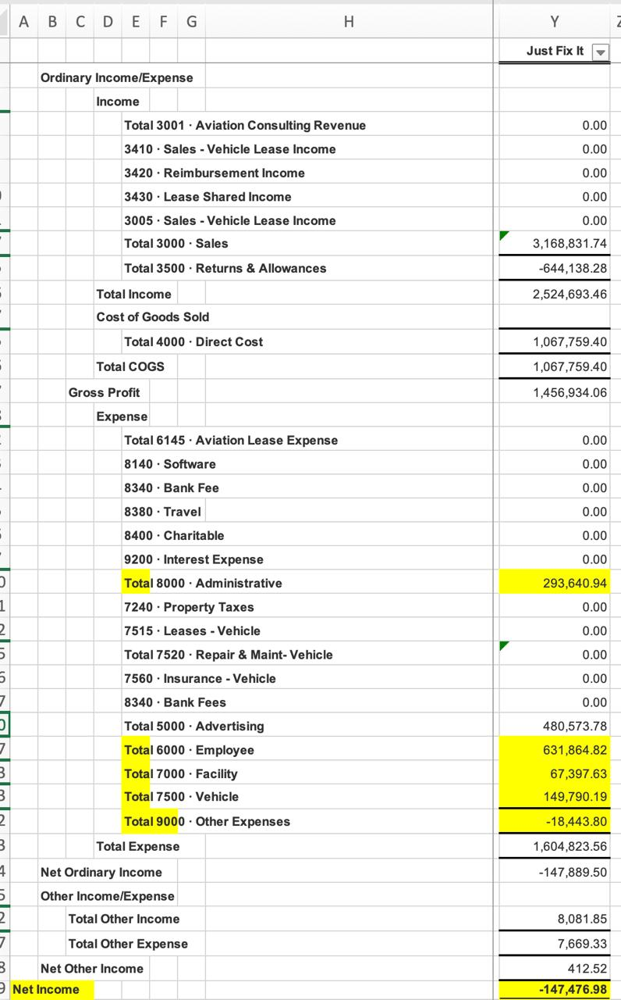

This analysis does not advocate for keeping Just Fix It (JFI) open. It advocates for making a clear, mathematically grounded decision—and then owning it.
Leadership currently has two legitimate options. The first is to close JFI, which eliminates the division's net loss but requires the three remaining branches (Mister Sparky Houston, Spring, and DFW) to absorb approximately $1.1 million in shared overhead that JFI currently carries. The second is to subsidize JFI at its current net loss of $147,000 per year while management works a defined turnaround plan with measurable milestones.
Rich Hodge is aligned with either path, provided it represents management consensus. What is not defensible is the current state: an unresolved loss that generates ongoing complaint without generating accountability. The absence of a decision is itself a decision—one that produces neither focus nor results.
The purpose of this document is to put the real numbers on the table so that management can reach a genuine consensus, commit to it, and execute against it with clarity. Once the math is visible and the choice is made, there is nothing left to debate—only work to do.
If you close JFI, the $1.12 million in overhead expenses is dumped equally onto the three Sparky branches.
This is the massive cost that gets added to the middle of EACH Sparky branch's P&L.
If you keep JFI open, JFI uses its own revenue to pay for almost all of that $1.12 million overhead. It comes up slightly short, resulting in a net loss of $147,476.98. The three Sparky branches just split that loss.
This is the much smaller cost EACH Sparky branch pays to cover JFI's shortfall.
| Scenario | Cost to All 3 Sparkys Combined | Cost Per Sparky Branch |
|---|---|---|
| Shut Down JFI | $1,124,250 | $374,750 |
| Subsidize JFI | $147,477 | $49,159 |
Imagine you and your three brothers share a massive apartment that costs $1,120 a month in rent. Your fourth brother, JFI, currently pays the whole rent bill using money from his part-time job.
But JFI's job doesn't quite cover everything—he is short by $147 every month. He asks the three of you to chip in about $49 each to cover the difference.
You get annoyed and say, "JFI is broke! Kick him out!"
If you kick JFI out, his part-time job money leaves with him. But the landlord still wants the $1,120 rent. Now, you and your other two brothers have to split the entire bill. Instead of paying $49 each to help JFI out, you are now paying $374 each.
The Conclusion: Leadership must decide which reality they want to manage. Do we shut JFI down and hold the three Sparky branches accountable for absorbing the $1.1 million in displaced overhead? Or do we keep JFI open, hold the Sparky branches accountable for subsidizing the $147k shortfall, and hold JFI accountable to a turnaround timeline? The math is clear. Now the decision must be.
This is the actual P&L showing the highlighted overhead lines and the bottom-line Net Income. If JFI is closed, the highlighted yellow lines (Administrative, Employee, Facility, Vehicle, Other) are reallocated to the Sparky branches.
